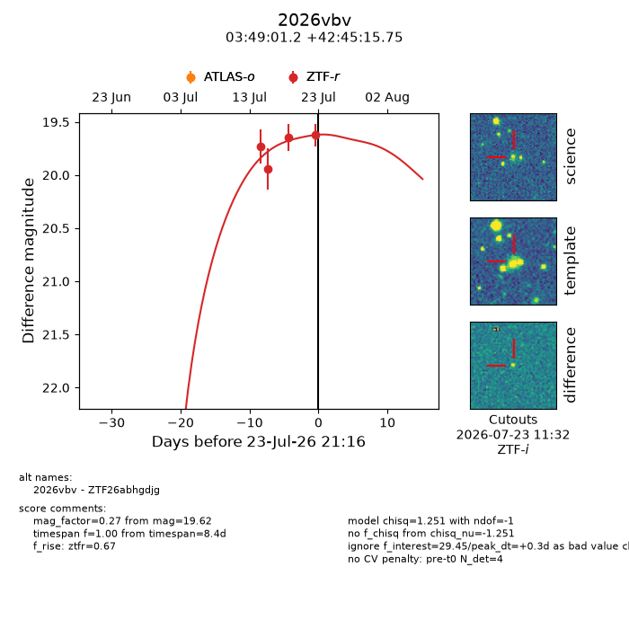
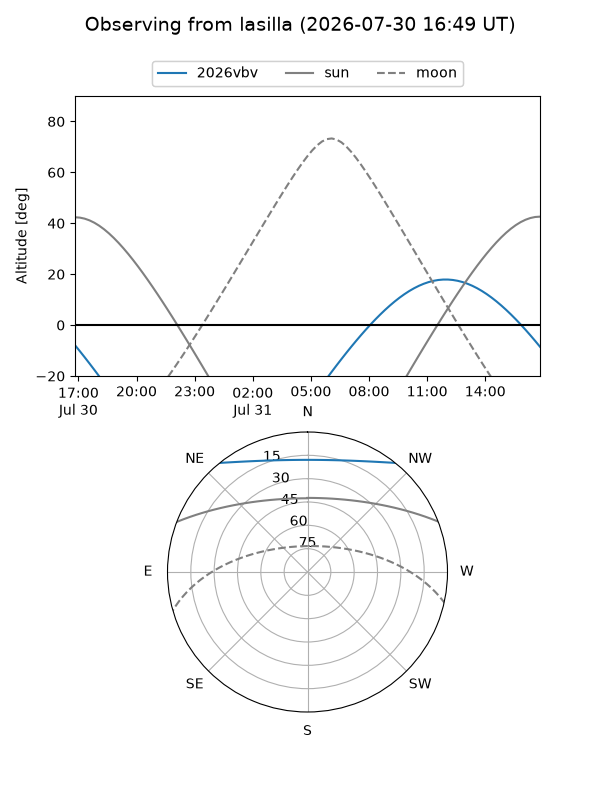
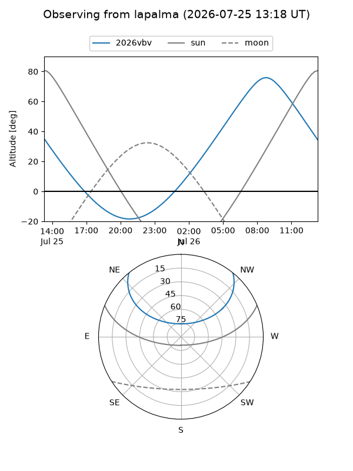
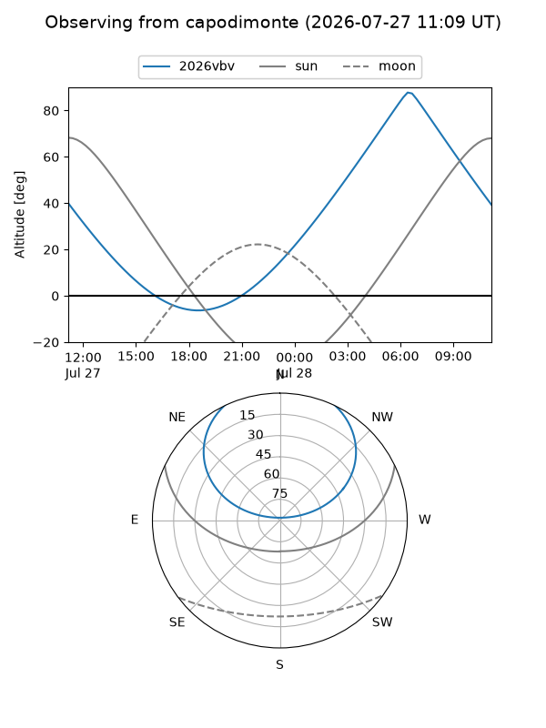
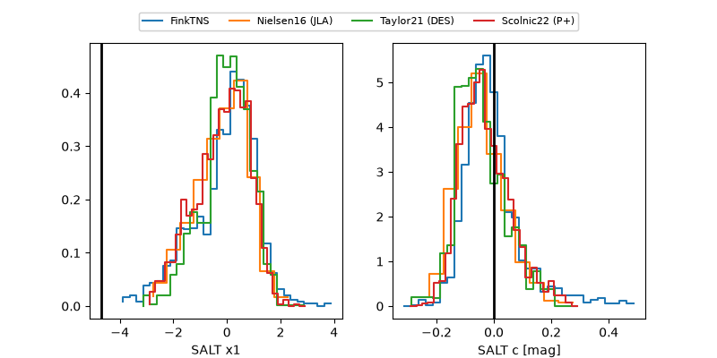

2026vbv
Target 2026vbv at 2026-07-23 21:19
Aliases and brokers:
FINK-ZTF: ztf.fink-portal.org/ZTF26abhgdjg
Lasair-ZTF: lasair-ztf.lsst.ac.uk/objects/ZTF26abhgdjg
ALeRCE-ZTF: alerce.online/object/ZTF26abhgdjg
YSE-PZ: ziggy.ucolick.org/yse/transient_detail/2026vbv
TNS name: wis-tns.org/object/2026vbv
Direct TNS query: direct search
alt names
ZTF26abhgdjg (ztf,fink_ztf)
2026vbv (tns,yse)
Coordinates:
equatorial (ra, dec) = 57.2550,+42.75438
equatorial (HMS+DMS) = 03:49:01.20,+42:45:15.75
galactic (l, b) = (154.2766,-9.05546)
Flags:
TNS type: nan
peak dt: +0.3
Photometry:
last ztfr=19.62
4 ztfr detections
Lightcurve

Visibility



Additional plots
